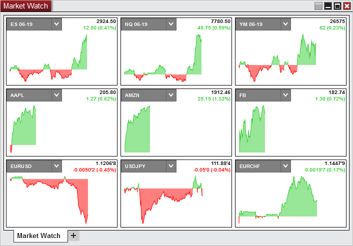
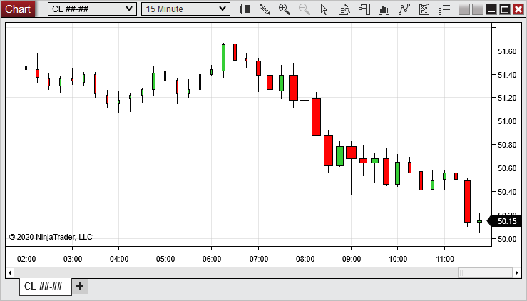

|
<< Click to Display Table of Contents >> 8.0.18.1 |


|
8.0.18.1
|
<< Click to Display Table of Contents >> 8.0.18.1 |
|
8.0.18.0 Release Date
May 6, 2019
Features |
Added Market Watch Market Watch Feature #13434
With the new Market Watch window you can quickly see the net change throughout the session, since last close. At the top right of each tile you will see the price with the net change below it in points and percent.
 |
Added an Automatic Strategy Generator (Experimental) Strategy Analyzer Feature #13039
Automatically generate a NinjaScript strategy with the new experimental* “AI Generate” backtest type. Configure any number of indicators and/or candle stick patterns to be considered and sit back while NinjaTrader does all the work. After running the AI Generate it will list for you the best strategies from the results. Selecting View will then pull up the strategy code in the NinjaScript Editor so you can view it and save it if desired.
*This is a NinjaTrader experimental feature that may or may not evolve over time.
|
Added Equivolume charts Charts Feature #13444
With equivolume bars you you can easily see which bars received the largest volume (indicated by being the widest) and which bars received the least volume (indicated by being the thinnest) in comparison to the other bars in view.
 |
Added automatic "Trend Lines" indicator Indicators Feature #13315
When a high swing is followed by a lower high swing, a trend line high is automatically plotted. When a low swing is followed by a higher low swing, a trend line low is automatically plotted.
|
Added the ability to submit an ATM order on Alert's Actions Alerts, ATM Strategies Feature #13398
With Submit An Order you can now select a saved ATM strategy to apply to the order.
|
Added Price Box plot style Chart, Indicators Feature #13561
The Price Box plot style will display just a price box in the y-axis, without plots on the bars.
|
Added NinjaScript Editor support for Visual Studio 2019 NinjaScript Editor Feature #13666
NinjaScript Editor now supports Visual Studio 2019 and will default to that if multiple versions are installed |
General updates to sound files and new regionalized sounds Localization Feature #13469
Some new modern voices have been added and are available in multiple languages |
Issue# |
Status |
Category |
Comments |
13321 |
Fixed |
Alerts |
Alert objects could change unexpectedly in multi-series scenario |
13505 |
Fixed |
Alerts |
Volume alerts using arithmetic offsets fired without applying the offset |
13597 |
Fixed |
Alerts |
Resolved a scenario where on condition reversed alert did not rearm properly after resume/restart |
13565 |
Fixed |
ATM Strategies |
Resolved a scenario where using currency mode did not submit stop as expected |
13622 |
Fixed |
ATM Strategies, Chart Trader |
Resolved a scenario where modifying a stop that was submitted in another window resulted in an error |
13624 |
Fixed |
Backup & Restore |
An error occurred when restoring from a foreign language backup file |
13530 |
Fixed |
Chart |
Background image could not be changed if corrupt image file was selected |
13568 |
Fixed |
Chart |
Charting a stock instrument with no default exchange selected and displaying the mini databox resulted in an error |
13625 |
Fixed |
Chart |
Resolved a scenario where chart would freeze when removing a drawing object |
13635 |
Fixed |
Chart |
Transparent plots with both negative and positive values caused lagging in the chart |
13669 |
Fixed |
Chart |
Resolved a scenario where loading historical executions resulted in an error |
13510 |
Fixed |
Chart Trader |
Chart Trader could be too small in width on duplicated chart window |
13613 |
Fixed |
Chart Trader |
Chart became unresponsive when an ATM stop with reverse was modified more than once |
13509 |
Fixed |
Chart, Strategy |
VWAP could be missing regions when hosted in strategy enabled from the Control Center |
13621 |
Fixed |
Chart, Templates |
Setting Show Tabs to False in a chart template could cause tabs to go missing unexpectedly |
13617 |
Fixed |
Coinbase |
Disconnect could result in a crash |
13626 |
Fixed |
Coinbase |
Resolved an error that occurred from real-time data |
13662 |
Fixed |
Control Center |
Email successfully sent message was marked as an error rather than an alert |
13671 |
Fixed |
CQG, SuperDOM |
Instruments with no volume could not scroll down in the SuperDOM |
13610 |
Fixed |
DrawingTool |
Calling draw tools which use PriceLevels with templates from compiled assembly could fail to get price levels from template |
13529 |
Fixed |
FXCM, Orders |
Resolved a scenario where positions did not update |
13552 |
Fixed |
G2, Orders |
Resolved a scenario where past orders would be logged again unexpectedly |
13600 |
Fixed |
Indicator |
Drawing Tool Tile did not display the Path icon correctly |
13612 |
Fixed |
Indicator |
Swing Input unexpectedly could be used when BarsArray was passed as an input |
13558 |
Added |
Instruments |
Added tick size of 0.00000001 |
13520 |
Fixed |
Instruments |
Instrument selector could show CFD and index prefix unexpectedly |
13555 |
Fixed |
Instruments |
Improved instrument type search filter to better give the results expected by default |
13665 |
Fixed |
Interactive Brokers, Market Analyzer |
Some instruments would not receive fundamental data that was expected |
13586 |
Fixed |
Kinetick |
Historical data requests for the ZT could result in an error |
13516 |
Fixed |
Market Analyzer |
Blank row dividers for chart columns unexpectedly had less opacity when selected |
13615 |
Changed |
Market Analyzer |
Net Change did not display fractional prices for points display mode |
13618 |
Fixed |
Market Analyzer |
Adding an indicator column then changing the indicators property caused the name to unexpectedly change |
13653 |
Fixed |
Market Analyzer |
Date columns had an error when value did not exist |
13660 |
Fixed |
Market Analyzer |
Resolved a scenario where columns could show '…' unexpectedly |
13587 |
Fixed |
Market Analyzer, Alerts |
Alerts that are checked against an indicator value and a numeric value did not rearm on reversal of the condition |
13511 |
Fixed |
NinjaScript |
Strategies with a secondary series prevented Strategies tab Filter Only Active Strategies option from being disabled |
13605 |
Fixed |
NinjaScript |
Resolved a scenario where a valid NinjaScript import file failed to import |
13633 |
Fixed |
NinjaScript |
Strategy indicator could get stuck in calculating after dragging and dropping an indicator |
13549 |
Fixed |
NinjaScript Editor |
Renaming file did not rename the name property |
13638 |
Fixed |
NinjaScript, ATM Strategies |
AtmStrategyCreate could submit orders to non-primary series despite BarsInProgress check |
13551 |
Changed |
Order Flow + |
Changed Order Flow Volume Profile tick resolution error text to be more clear |
13603 |
Fixed |
Order Flow + |
Order Flow Trade Detector could throw an error when hovering over a marker |
13616 |
Fixed |
Order Flow + |
Selecting Order Flow Volume Profile resulted in an error on DST switch |
13507 |
Fixed |
Playback |
Resolved a scenario where historical data could be removed that was older than the Playbacks start date |
13581 |
Fixed |
Playback, Chart |
Switching trading hours could result in opening bar to display incorrectly |
13601 |
Fixed |
Playback, DrawingTool |
Resolved a scenario where drawing objects could be removed when opening/closing workspaces |
13641 |
Fixed |
Playback, DrawingTool |
Global drawing objects drawn on historical bars while connected to live data could be removed from closed workspace when you connect/play playback data |
13569 |
Fixed |
Playback, Strategy |
Strategy could not enable on playback after terminated |
13571 |
Fixed |
Playback, Strategy |
Rewinding playback could duplicate strategy added chart indicators |
13623 |
Changed |
ShareAdapter |
Default SMTP config settings for Yahoo were updated |
13562 |
Fixed |
Skins, Strategy Builder |
When using the dark skin, strategies listed in Strategy Builder were unreadable |
13532 |
Fixed |
Strategy |
Changing the time-frame for multiple active strategy instances could leave parts of the instances disabled |
13547 |
Fixed |
Strategy |
Date field remained active after strategy was enabled |
13567 |
Fixed |
Strategy |
SetParabolicStop could move the order to the wrong side of the market resulting in an error |
13585 |
Fixed |
Strategy |
Resolved a scenario where reloading NinjaScripts resulted in duplicates of strategy indicators |
13588 |
Fixed |
Strategy |
Resolved a scenario where enabled strategies showed as not enabled |
13564 |
Fixed |
Strategy Analyzer |
False date picker error could occur after clicking reset through the templates. |
13647 |
Fixed |
Strategy Analyzer |
Strategy Analyzer optimization results tool tip could display in an unexpected format |
13650 |
Fixed |
Strategy Analyzer |
When using the strategy optimizer if you closed a secondary window while optimizing it would result in a crash |
13506 |
Changed |
Strategy Builder |
Improved performance for compiling or opening scripts |
13513 |
Fixed |
Strategy Builder |
Cancel button could trigger program unresponsive pop-up for large strategy |
13576 |
Fixed |
Strategy Builder |
Condition builder embedded indicator parameters would not visually update |
13628 |
Fixed |
Strategy Builder |
An error could occurred when adding an indicator with simple font |
13664 |
Fixed |
Strategy Builder |
Checking for first bar of the session resulted in an unneeded check |
13554 |
Fixed |
Strategy, Chart |
Strategy hosted indicator regions could disappear on reload |
13548 |
Fixed |
Strategy, Workspaces |
Strategies still showed on chart of workspace when the strategy was saved to a new workspace |
13542 |
Fixed |
SuperDOM |
Could show more indicator lines than expected |
13544 |
Fixed |
SuperDOM |
Adding two instances of Bollinger resulted in an error |
13570 |
Fixed |
SuperDOM |
Column configuration lost selection upon applying changes |
13579 |
Fixed |
SuperDOM |
Indicator Instances duplicated when changing calculate settings |
13606 |
Fixed |
SuperDOM |
Resolved a scenario where the previous ATM template was retained unexpectedly |
13608 |
Fixed |
SuperDOM |
An unexpected error could occur when applying an indicator the license was not enabled for |
13667 |
Fixed |
SuperDOM, Licensing |
An ATM template could stick if the workspace was closed then the license key was switch from live to free edition |
13578 |
Fixed |
SuperDOM, Playback |
Resolved some scenarios where the SuperDOM did not display as expected while Playback was paused |
13489 |
Fixed |
TD Ameritrade, Orders |
In some scenarios the position size was reported incorrectly |
13580 |
Fixed |
Time and Sales |
A Time and Sales which was open prior to a disconnect/reconnect, upon reconnect only printed as above ask |
13640 |
Fixed |
Trade Performance |
Avg MAE on Summary tab was missing trade size adjustment when summary displayed in pips |
13651 |
Fixed |
Trade Performance |
Trade Performance presets did not load with new window |
13599 |
Fixed |
UI |
Fixed message box text for instrument roll over |
13630 |
Fixed |
UI, Controle Center |
Preferred connection real-time default selection was missing for Cryptocurrency |
13636 |
Fixed |
UI, Indicators |
Resolved a scenario where the indicator properties window could open partially out of view |
13550 |
Fixed |
UI, ATM Strategies |
Custom stop strategy tool tip text was missing |
13656 |
Fixed |
Workspaces |
Switching workspaces that had a databox could result in a freeze |
13557 |
Fixed |
Workspaces |
Resolved a scenario where 'Save Workspace' confirmation dialog did not work as expected |
13658 |
Fixed |
Workspaces |
Resolved a scenario where saving and closing workspaces with defaults names could open an unexpected workspace |
8.0.18.1 Release Date
June 4, 2019
Issue# |
Status |
Category |
Comments |
13741 |
Fixed |
Commissions, Risk |
Risk and Commissions templates did not update on start up |
13742 |
Fixed |
FXCM, Position Display |
Resolved a scenario where account could fall out of sync from live account |
13739 |
Fixed |
Interactive Brokers, Data |
Real time ^TICK data only updated in positive values |
13745 |
Fixed |
Reginalization, TopStep Trader |
Connection name translated poorly when platform language was set to Spanish |
13744 |
Fixed |
Strategy Analyzer |
Could not open optimization result in new tab/window |